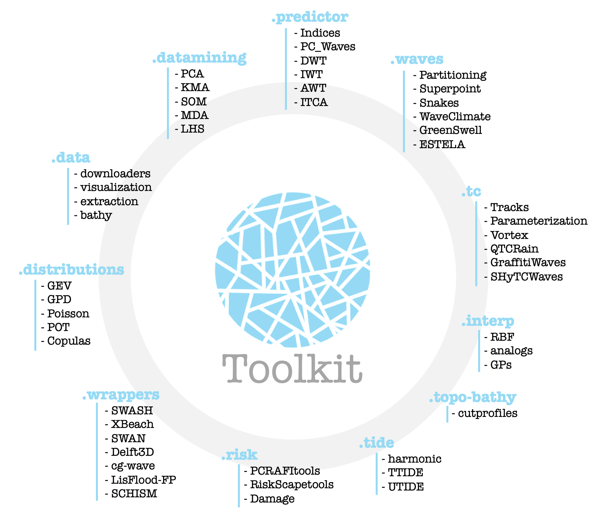

Introduction
In recent years, the GeoOcean research group at UC has promoted the creation of a Consortium of Universities and Research Centers for the development of the BlueMath library. BlueMath provides multiple tools in Python and is accessible to the entire scientific community.
BlueMath encompasses various mathematical techniques for analyzing and characterizing coastal dynamics. These tools fall within the field of Data Science and include:
Classification techniques (e.g., K-means, maximum dissimilarity, Camus et al., 2011);
Dimensionality reduction methods (e.g., Principal Component Analysis);
Experimental design techniques (e.g., Latin hypercube sampling, Ricondo et al., 2023).
Additionally, multidimensional interpolation methods (e.g., Radial Basis Functions) and neural networks may be considered for developing metamodels, particularly in the case of hybrid strategies for coastal flood modeling.
Installation
pip install bluemath-tk
Project status
UNDER DEVELOPMENT